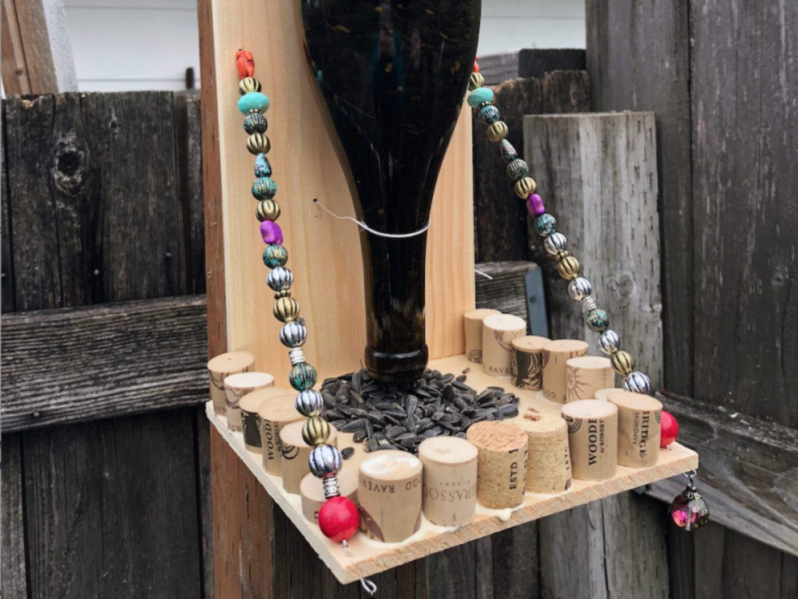

March 15, 2018
Reuse, reuse, reuse

Today’s post comes from one of Finley’s closest high school buds who also happens to be part of the family. Morgan is posting from Oregon where she attends Oregon State.
Anyone who has had a glass of water at the Broaddus’ house knows that their glasses are a collection of old jam jars, just one of many ways they are eco-friendly. Finley and our middle school “green team mafia” encouraged our peers to reduce, reuse, and recycle but often the emphasis was solely on recycling. While recycling is convenient these days as it merely involves depositing your items in the correct bin, reusing and reducing can be more challenging. I am fortunate to live in Oregon, where our recycling bins are twice the size of our trash cans, and stores give discounts for bringing reusable containers. I also happen to live in one of the most bike-friendly cities in the country, making reducing my carbon footprint easy as biking to campus is a breeze and more cost-effective. However, I struggled to find ways to reuse at first. It was easy enough to buy a reusable bottle or thermos, but how could I reuse items not explicitly meant for reuse? I have found that by reusing items, I would otherwise dispose of for novel purposes has allowed me to reduce what I have to buy. For example, old plastic cups become planters, wine bottles become bird feeders, and empty cans become towel holders. Not only does this process help to reduce waste by repurposing old items, but it also saves money, which for any college student is a priority. By regrowing my lettuce heads from stems or composting my scraps, I spare the expense of buying more produce and fertilizer. These projects also allow for one’s artistic side to show, as these crafts often need to be painted or jazzed up to add a little charm. Whenever I do these projects, I am reminded of Finley because earth-friendly crafts seem right up her alley. I encourage everyone to save the earth (and a little money) by searching Pinterest or Google for fun and creative ways to reuse and repurpose everyday items.
https://www.budgetdumpster.com/blog/diy-plastic-bottles-recycling/
https://www.diyncrafts.com/17424/repurpose/50-jaw-dropping-ideas-for-upcycling-tin-cans-into-beautiful-household-items